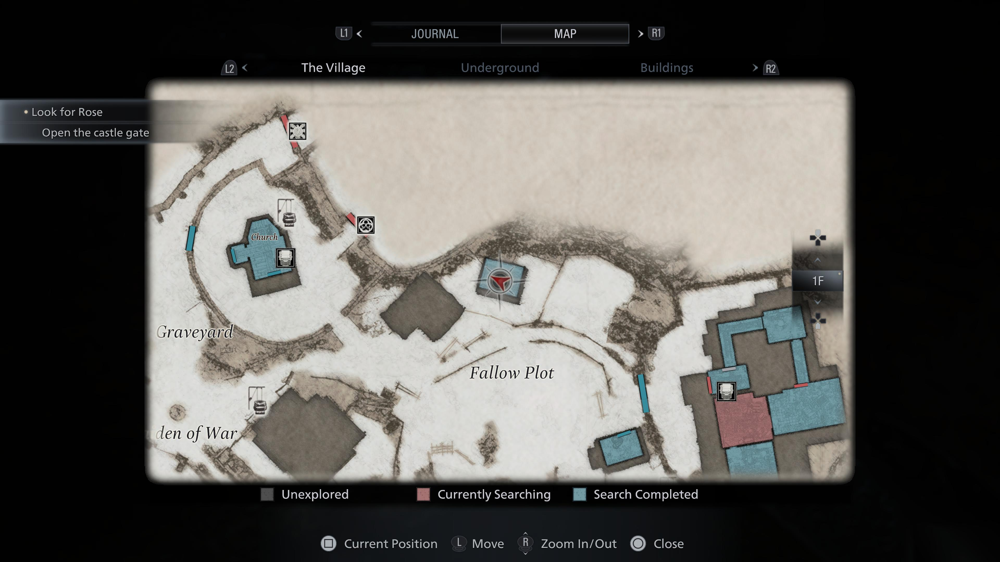
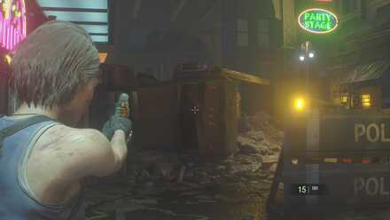

1. WHEN IN DOUBT, PROGRESS THE STORY
Resident Evil Village is full of locked doors, locked drawers, and things you just can’t do yet. Some keys and key items won’t become available until hours after you see the lock they open. That’s just part of the game. Don’t frustrate yourself trying (and failing) to get to every single item or unexplored region. When you hit a brick wall (literal or metaphorical), try progressing the story.
There’s rarely (if ever) a point where you’re permanently barred from returning to a location. Just be patient.
2. TURN YOUR MAP FROM RED TO BLUE
Resident Evil Village a perfect cocktail of horror and action, and when you’re not shooting Gothic monstrosities, you’re exploring the ruined Romanian countryside. Useful items are everywhere, and finding them all is just as important as taking down the lycanthrope invasion — in fact, one leads to the other. That’s where your map comes in.

When you enter a building or a room for the first time, it’ll appear with a reddish tint on your map. According to the map’s legend, that means you’re “Currently Searching.” According to us, that means there’s still loot to find. Your goal is to turn the map blue, which means “Search Completed,” which means you got all of the stuff.
Check the counters, open the cabinets, look the drawers, scour the ceilings. Check everywhere. Turn that map blue. (Unless you can’t. Sometimes you can’t. Then you can leave and come back later when you’ve got, say, a lockpick.)
3. PICK YOUR WEAPON SLOTS, AND SWITCH BETWEEN THEM
Not long into Resident Evil Village, you’ll have multiple weapons to choose from, using your D-pad buttons. You can change the D-pad assignments in your inventory. This ease of access is kind of a clue about how to use your weapons: Switch between them often and combine attacks.
Map the weapons to directions in a way you’ll remember. For us, that means handgun is up, shotgun is right, the cool gun with the least ammo is down, and more utility weapons like bombs or mines go on the left. We always know what direction to hit on the D-pad to pull up the best weapon for a given job.
For example, hitting an enemy with a shotgun blast to the face might not kill them, but it does knock them down. At that point, a couple handgun shots will finish them off.
Mixing and matching your weapons means you use less ammo and have to reload less often. To save even more ammo
4. YOUR KNIFE SAVES AMMO
Ethan’s first weapons pretty much sucks as a weapon, but it’s a great tool for smashing and breaking things, which means it’s also a great tool for saving your precious ammo. Whenever you see something that seems breakable, take a swipe at it with the knife. Worst case, at least you didn’t bury a bullet in the wall that would be better buried in a werewolf’s head.
5. SMART ETHANS RUN AWAY
Sometimes, games tell you what to do without saying a word. Resident Evil Village’s version of this happens early, when hairy monstrosities charge at you, and you empty what feels like a billion bullets into them before they still don’t die.
The unspoken lesson: You’re weak. Don’t fight. Run.
There will be plenty of time and opportunity to fight later when you’re more powerful and better equipped.
6. QUICK TURN WILL SAVE YOUR LIFE
RE8’s Ethan isn’t exactly fast, and he’s even slower walking backward. Backing away from the monsters you fight makes sense since it buys you more time to land headshots (more on that in a moment).
A lot of Ethan’s enemies are fast, though. Some of them are huge and fast, making them extremely deadly. Turning all the way through a 180 takes a lot of time. Instead, learn to use the quick turn control — on a controller, it’s back on the left thumbstick and Circle/B.
Quick turns just point you in the opposite direction and get you back to running for your life that much faster.
7. LET ZOMBIE HEADS MOVE INTO YOUR SIGHTS
This advice is so resident evil that this isn’t the first time we’ve given it. Don’t try to follow a shambling zombie-thing with your controller.
Pick a point where it’s likely to walk past, pull up your sights, and start backing up slowly. Aim with your left stick, waiting for the werewolf or vampire to amble right into your trap.

Pair this philosophy with a shotgun, and you’re basically just popping balloons. Which is cool.
8. AIM FROM BELOW
Look: We can’t exactly explain this, and we sure don’t have what we assume is the knowledge of geometry to prove it, either. For all we know, it’s a placebo effect, but it sure seems easier to get headshots from a crouched position.